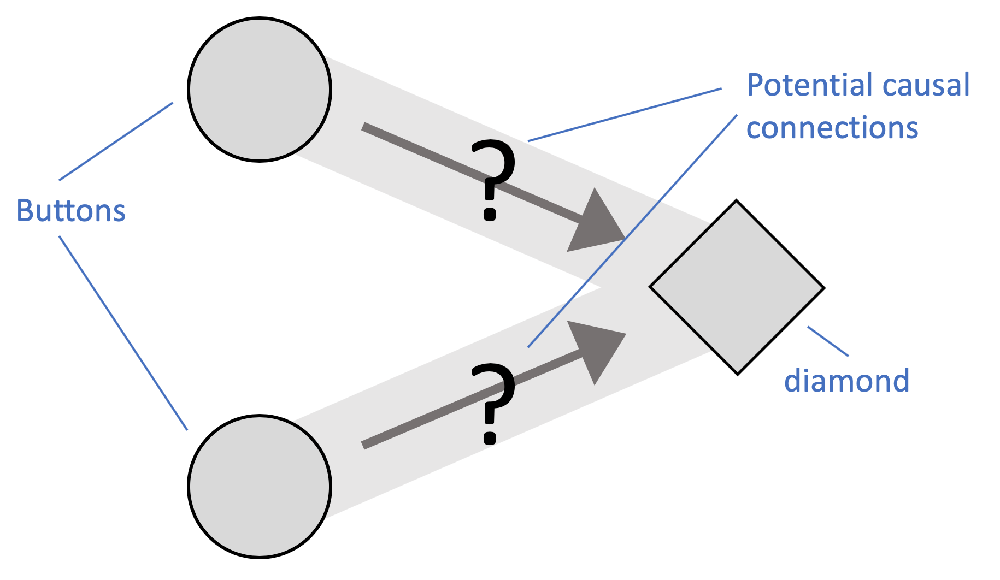

Instructions
Thank you for participating in this study!
Please read the instructions very carefully!
You will have to pass a test on your understanding before you can start the experiment.
Please minimize the chances of possible distractions (please switch off messengers, email, music,...)!
Please make this window as large as possible (full screen best).Please do not refresh this page during the experiment.
Click Next to move onto the instructions.
In this task, you will watch video clips and then try to figure out the connections between the components of several causal devices. The causal devices look like this:
Each device has two control components (buttons on the left) and one target component (diamond shaped on the right).
Click Next to move onto the next instructions.
The target component tends to activate fairly regularly. Each time it activates it lights up yellow for a short time. Watch this video to get some experience of how the target component behaves.
So, as you can see, it happens about once every five seconds all by itself. However, the control components might affect this.
Clicking on either control component might have an effect on the target component.
There are three ways that a control component might influence the effect component. It might generate an additional activation of the target. It might prevent the next activation(s) of the target. Or it might have no effect on the target.
Your task will be to figure out what kind of influence the two control components have on the target component for each device.
Click Next to move onto the next instructions.
Generative connection: Generative components will produce an extra activation of the target component, usually within 1-2 seconds.
Click Start to watch an example of a component with a generative connection. The hand symbol indicates each time someone activates the control component (remember the target component can regularly light up itself).
Preventative connection: Preventative components will block all activations of the diamond for a short period (2-4 seconds), no matter whether those activations were produced by a generative connections or happened by self-activation.
Click Start to watch the preventative connection demo (remember the target component can regularly light up itself).
Non-causal cnnection: Unconnected control components have no impact on the target component.
Click Start to watch the unconnected control component demo (remember the target component can regularly light up itself).
For each device, you will get to watch a video clip in which someone click on each control component several times.
Your task is to identify the two connections from the control components to the target component. Each of these two connections can either be generative, preventative, or non-causal (no connection between the specific control component and target component).
The total duration of a clip is 20 seconds. At the beginning of a clip, the target component will self-activate. After 20 seconds it is not possible to observe further activations of any component even when it should activate.
Each clip can only be played once. So please focus while watching the clip and try to understand the relationships between control components and target component. If you feel tired during the experiment, you can take a break between trials.
You will get a bonus of 3 cents for each correctly identified connection per device. The maximum payment for completing the 19 devices is thus $1.14 (plus your basic payment of $1.00)
You can respond by left clicking the grey area during or after each clip:

You can always change your answers before you submit them. After submitting your answers, you will automatically be directed to the next trial.
Click Next to move onto the comprehension check.
Comprehension check: To make sure you understand the instructions, now please indicate for each statement whether it is correct or false.
Well done, you got all the questions correct!
You are now ready to start the task.
The first problem is practice, then you will be playing for points.
Please click Next to proceed.
Unfortunately, you didn't answer all of the comprehension check questions correctly.
Please have another close look at the instructions and work out whether those statements are correct or false.